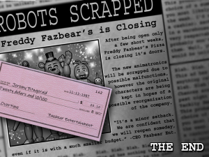

If you see any issues, please do make us aware via our Contact Form.
Thank you for browsing FNaFLore.com, we hope you enjoy the improvements that are coming to the site!
how wrong we are!

On the FNaF2 Location
Kizzycocoa – I would like to talk about the FNaF 2 Location for a brief moment, and my observation of it’s Timeline.
That location has never, never sat right with me. It’s supposedly been open a few weeks, with toys that’re just as new, and yet the place is already dirty? Wires coming from the ceiling, grubby walls etc?
The location has not sat well with me for those, and other reasons. So I’d like to put forward my observation on this location.
My theory on this location, is that it has been open for quite some time already, but perhaps not with the same cast.
The first piece of supporting evidence I’d like to point out are the FNaF2 opening newspaper. Give them a small look.
The Newspapers
 |
{kind=link}
{kind=link}
I’d like to first draw attention to the last newspaper. It claims that after “a few short weeks”, the place is closing, and the “new animatronics” are to be scrapped, with the “old animatronics” put into storage, to be used at a future date.
Simple enough. We can all agree that the location shuts down, the “new” animatronics are burnt/disposed of, and the “old” animatronics rule the show for a bit.
But this does not work with the first newspaper clipping. It clearly says “Grand Re-Opening!”.
Ponder that phrase a moment.
When a location re-opens, this implies that the place was open in the past.
Further, it’s strange that it mentions “Vintage Pizzeria given new life!”. Pizzeria implies the location, rather than the brand. Something here is clearly off.
Now, some could simply say this doesn’t matter. perhaps it’s a slip of the tongue. It is a fair assessment. Scott does tend to use words when he should not, such as using “Summer Job” in FnaF1, which is set as November. But I would find it harder still to assume he not only misspoke, but misdrew.
The Children’s Drawings
Some good hints lie in the child drawings. These are drawings of the characters in the FNaF location. My question is, who appears in the drawings in FnaF2?
 |
 |
 |
We can clearly see Mangle, which we’d expect. We can see either BB or JJ as well. For the sake of simplicity, we’ll chalk that up to BB. Though that said, the colour scheme is very reminiscent of JJ.
There is also Golden Freddy. Now I’d ask you, how does that picture exist? If the children were murdered, how did one of them manage to draw that image? But, that is an altogether different point. Here is my main point.
Where are the toy animatronics in those images?
Toy Bonnie? Toy Freddy? Toy Chica?
Right there, you say? I disagree. Look closer. Look at Bonnie. What colour is he? Bright blue, or dark blue? we can surely feel confident that it is Toy Chica. But then, why is her mouth unhinged to that degree? Toy chica’s beak is the only part of her mouth that opened. Only regular Chica had the ability to open her mouth up, beyond her face.
But surely, we can count on Freddy, right?
Except, no. If you look to the orange freddy drawing in the main room (and an obscured version in Kid’s Cove), he looks identical to the Freddy in the “SAVE HIM” Minigame. The one that categorically came before FNaF2.
The characters in the drawings are most definitely of the original cast. As for Golden Freddy, my belief, though this is as of yet unfounded, is that he and Spring Bonnie were in action alongside the old animatronics. That said, consider why his picture is there, in a pre-FNaF2 era.
He is there, at a point where the location is open before the events of FNaF2, but still in the same location. There are no toys as I’ve tried to prove, and Mangle/BB exist.
We know for a fact that the FNaF2 location’s murders occured when the toys were there, as per the “SAVE THEM” minigame. We also know that the original characters were stuffed with the dead children in the old location, which was left to rot. The two sets of murders do not align with this picture.
This clearly shows Golden Freddy was up and walking during operational hours in the FNaF2 location, but did not kill the children during that time. This could link Fredbear’s Diner and the first iteration of the FNaF2 location. Mangle in the FNaF4 minigames which canonically must occur several years before FNaF2’s gameplay, and Golden Freddy appearing at the FNaF2 location in it’s first opening.
But this could be old hat, right? a bunch of old pictures? Actually, no. you can clearly see the text referencing the “New” Freddy Fazbear’s Pizza. This has to take place at the second location, which is the FNaF2 location. Not only that, but no-one could just slap new onto these images. Otherwise, the text would read “My day at the Freddy Fazbear’s Pizza”. That would make no sense to print whatsoever. These drawings were made at a location that was considered “New”.
The Plushies
This is all so far founded on child’s pictures, though. Let’s talk Plushies. One plushie is clearly in the spotlight, out of all of the others. Quite literally.

This plushie is the only one with a degree of light put onto it. Is that not odd? This one plush gets a bunch of light, while the rest are dark? It’s a bit of a strange detail Scott has added. Unless, this were part of a message of the lore.
Note the bib. it says “Let’s Eat”. It is interesting to note, the only Chica in the FnaF2 location who has that message on their bib is “old” Chica. Toy Chica’s bib has “Let’s Party”. Further evidence for FNaF2’s location previously housing the old animatronics.
The Mangle
I’m certain many will argue that Mangle proves this is FNaF2. Surely, they were all designed together, in a “Whole new direction” to make them kid friendly?
I understand that view. I held it for some time! But, not quite. Mangle has existed for a long, long while.
Firstly, the staff are already tired of putting her back together. If we believe the newspaper, these animatronics are barely 2 weeks old. The staff would not have given up by this point. Second, as we saw in FNaF4, Mangle clearly exists at a time where Fredbear also exists. However, if you recall the Night 3 phone call, Phone Guy says Fredbear’s has been “Closed for years”. So, mangle is hardly a “new” animatronic, as said in the newspapers. Mangle is very much an old addition of the franchise.
We must heed that word, “new”. It is important to know what is new, and what is old. If this location were reopening, surely these animatronics, including Mangle, would be considered “Old” if the location was open at the time of Fredbear’s. But the toys are considered “New” in the newspapers, while the Withered animatronics are considered to be the “old characters”. This means Mangle simply has to have come before all of the toys.
What about Foxy? He was part of the original crew.
Mangle is even singled out as replacing Foxy by Phone Guy in the night 3 call. It would make sense that all animatronics were remade, but he mentions that process specifically of Mangle, implying Mangle had a separate replacing phase in it’s lifespan.
This would explain the lack of foxy drawings, and the lack of foxy overall in the location. The only reference to foxy is the carousel. which itself harkens to older days in the previous location. I cannot explain this beyond “perhaps it was too expensive”, or “perhaps they just didn’t have the money”.
Perhaps the most damning evidence that Foxy is replaced long before FNaF2, is in the plushies.
 |
There is not a single Foxy plush on that shelf. And yet, we know there is a foxy plush already modelled by Scott. We know these are from the old characters, and yet one of the crew is missing. This I take as evidence that Foxy has been out of the rotation for some time. If they were from the same era, there would be a foxy plush up there, yet it is omitted.
In summary
- The FNaF2 location has 2 openings. It’s first opening, and the grand re-opening. FNaF2 is set in the second opening.
- Mangle replaced foxy during the first opening, alongside the original cast of Freddy, Bonnie and Chica.
- This is all explained via the plushies, the children’s drawings and the wording of the newspapers.